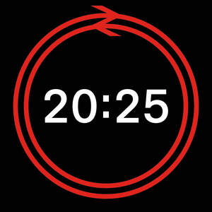

Trade Mark Journal No.2025/044 31 October 2025
UK00004281454 21 October 2025 (9,14,16,18,20,21,24,25,26,28,35,38,39,41,42,43)

- Class 9
- Safety equipment and apparatus for the prevention of accident or injury; railway traffic safety apparatus; flashing safety lights; safety signals [audible] other than for vehicles; electronic devices for controlling railway apparatus and instruments; computers; computer hardware; magnets; fridge magnets; decorative magnets; ornamental magnets; mobile telephones; cases and covers for mobile telephones; magnetic badges; digital signage; luminous signage; magnetic badges for vehicles; magnetic signage; magnetic digital signage; magnetic luminous signage; flash memory cards; non- flash memory cards; portable audio and video players/recorders; data storage media; data cables; electric cables; electric or electronic transport network control systems; parts and fittings for all the aforesaid goods; computer application software for gaming; computer application software for retail services; computer application software for playing computer games; computer application software for rail travel; computer application software for electronic ticketing; computer software for controlling railway apparatus and instruments; games downloaded from the Internet; games software; smart watches; computer software and computer application software for use in smartwatches; downloadable mobile applications for a smart watch face; downloadable graphical user interface software; compact discs, DVDs, interactive DVDs; videos; computer games; entertainment software; virtual reality games software; video games programs; audio-visual recordings; simulation software; magnetic tapes; computers and computing apparatus; data processing apparatus; data storage and data presentation materials; electronic books, electronic periodicals and electronic newspapers; electronic publications; on-line publications; downloadable electronic competitions; electronic publications provided on-line over a communications network or the Internet; electronic tickets; online downloadable tickets for rail travel and entrance to entertainment venues.
- Class 14
- Safety equipment and apparatus for the prevention of accident or injury; railway traffic safety apparatus; flashing safety lights; safety signals [audible] other than for vehicles; electronic devices for controlling railway apparatus and instruments; computers; computer hardware; magnets; fridge magnets; decorative magnets; ornamental magnets; mobile telephones; cases and covers for mobile telephones; magnetic badges; digital signage; luminous signage; magnetic badges for vehicles; magnetic signage; magnetic digital signage; magnetic luminous signage; flash memory cards; non- flash memory cards; portable audio and video players/recorders; data storage media; data cables; electric cables; electric or electronic transport network control systems; parts and fittings for all the aforesaid goods; computer application software for gaming; computer application software for retail services; computer application software for playing computer games; computer application software for rail travel; computer application software for electronic ticketing; computer software for controlling railway apparatus and instruments; games downloaded from the Internet; games software; smart watches; computer software and computer application software for use in smartwatches; downloadable mobile applications for a smart watch face; downloadable graphical user interface software; compact discs, DVDs, interactive DVDs; videos; computer games; entertainment software; virtual reality games software; video games programs; audio-visual recordings; simulation software; magnetic tapes; computers and computing apparatus; data processing apparatus; data storage and data presentation materials; electronic books, electronic periodicals and electronic newspapers; electronic publications; on-line publications; downloadable electronic competitions; electronic publications provided on-line over a communications network or the Internet; electronic tickets; online downloadable tickets for rail travel and entrance to entertainment venues.
- Class 16
- Paper; cardboard; printed matter; printed publications; books, posters, manuals, magazines, periodicals, newspapers, timetables, directories, maps, leaflets, textbooks, brochures, pamphlets, catalogues; photographs; stationery and office requisites; instructional and teaching material; record cards; packaging materials made of paper, cardboard or plastic; adhesives for stationery or household purposes; tickets; printed tickets; printed leaflets; printed travel matter and timetables; writing implements; pens, pencils, rulers; printed identity cards (other than encoded or magnetic); printed season tickets; paper napkins; drip trays of paper, card or cardboard; carrier bags of paper, card or cardboard; notebooks; notepads; envelopes; paper stationery; calendars; diaries; journals; wrapping paper; gift wrapping paper; paper tissues; kitchen paper; cardboard gift boxes; charts; cards; postcards; prints; advertising pamphlets; advertising posters; advertising publications; paper badges; cardboard badges; paper name badges; name badges [office requisites].
- Class 18
- Luggage; articles of luggage; suitcases; trunks [luggage]; bags; purses; wallets key cases; umbrellas; bum bags.
- Class 20
- Furniture and furnishings; seating; shelving; mirrors; picture frames; photograph frames; basketware; household furnishings; statues, figurines, works of art and ornaments and decorations, made of wood, wax, plaster or plastic; ornaments; display boards; displays, stands and signage, non-metallic; wall plaques; storage boxes; containers, not of metal, for storage or transport; bean bags; plate racks; magazine racks; newspaper display stands; wine racks; book rests and book stands.
- Class 21
- Household or kitchen utensils and containers; cups; mugs; glasses, drinking vessels and barware; drinking vessels; barware; glassware; mug racks; coasters; crockery; picnic crockery; plates; bowls; tins for storing sweets; cake tins and containers; biscuit tins and containers; baking tins; jars for sweets; bonbon jars; money boxes not of metal.
- Class 24
- Textiles and substitutes for textiles; household linen; curtains of textile or plastic; badges made of fabric material; textile coasters; tea towels; textile goods for use as bedding; bed clothes and blankets; bed linen; table Linen; towels; hand towels; beach towels; kitchen towels.; soft furnishings.
- Class 25
- Clothing, footwear, headgear; belts; socks; ties; bow ties; aprons; t-shirts; sweaters; jumpers; face masks [clothing].
- Class 26
- Button badges; badges for wear, not of precious metal; novelty buttons [badges] for wear; ornamental novelty badges; embroidered badges; lanyards for wear; printed and promotional lanyards; artificial Christmas wreaths and garlands.
- Class 28
- Games, toys and playthings; Toy models; toy model vehicles; toy model kits; toy model trains; toy model train sets; toy model wagons; board games; card games; playing cards; electronic games; quiz games; action figures; action toys; whistles; rattles; puzzles; jigsaw puzzles; cube puzzles; toys in the form of puzzles; video game apparatus; toys incorporating money boxes; paper face masks; face masks for sports; toy and novelty face masks; Christmas tree decorations; Christmas crackers; artificial Christmas trees; Christmas tree skirts.
- Class 35
- Advertising; Business administration; business administration assistance; business advisory and consultancy; Business management services; Business advisory and consultancy services in the field of the operation of rail transport services; provision of statistical information relating to business; business management services all relating to real estate, transport and infrastructure projects; forecasting and analysis for business purposes; forecasting and analysis for business purposes in the field of economics, business failure, management and business risk; electronic data processing services; computerised database management; contract cost estimating services; cost estimating services; preparation of business reports; cost and/or price analysis; public relations; publicity services; rental of publicity material; leasing, hire and rental of advertising space, hoardings and billboards; business services, namely, facilities management of technical operations in the field of the operation of rail services; consultancy, advisory and information services in the field of advertising, railway services business management, analysis and advisory services; business services all relating to the management and operation of rail services; arranging of business exhibitions and trade fairs; arranging and conducting of auction sales; retail and wholesale services relating to the sale of safety equipment and apparatus for the prevention of accident or injury, railway traffic safety apparatus, flashing safety lights, safety signals [audible] other than for vehicles, electronic devices for controlling railway apparatus and instruments, computers, computer hardware, magnets, fridge magnets, decorative magnets, ornamental magnets, mobile telephones, cases and covers for mobile telephones, magnetic badges, digital signage, luminous signage, magnetic badges for vehicles, magnetic signage, magnetic digital signage, magnetic luminous signage, flash memory cards, non- flash memory cards, portable audio and video players/recorders, data storage media, data cables, electric cables, electric or electronic transport network control systems, computer application software for gaming, computer application software for retail services, computer application software for playing computer games, computer application software for rail travel, computer application software for electronic ticketing, computer software for controlling railway apparatus and instruments, games downloaded from the Internet, games software, compact discs, DVDs, interactive DVDs, videos, computer games, entertainment software, virtual reality games software, video games programs, audio-visual recordings, simulation software, magnetic tapes, computers and computing apparatus, data processing apparatus, data storage and data presentation materials, electronic books, electronic periodicals and electronic newspapers, electronic publications, on-line publications, downloadable electronic competitions, electronic publications provided on-line over a communications network or the Internet, electronic tickets, online downloadable tickets for rail travel and entrance to entertainment venues; retail and wholesale services relating to the sale of parts and fittings for safety equipment and apparatus for the prevention of accident or injury, railway traffic safety apparatus, flashing safety lights, safety signals [audible] other than for vehicles, electronic devices for controlling railway apparatus and instruments, computers, computer hardware, magnets, fridge magnets, decorative magnets, ornamental magnets, mobile telephones, cases and covers for mobile telephones, magnetic badges, digital signage, luminous signage, magnetic badges for vehicles, magnetic signage, magnetic digital signage, magnetic luminous signage, flash memory cards, non- flash memory cards, portable audio and video players/recorders, data storage media, data cables, electric cables, electric or electronic transport network control systems, computer application software for gaming, computer application software for retail services, computer application software for playing computer games, computer application software for rail travel, computer application software for electronic ticketing, computer software for controlling railway apparatus and instruments, games downloaded from the Internet, games software, compact discs, DVDs, interactive DVDs, videos, computer games, entertainment software, virtual reality games software, video games programs, audio-visual recordings, simulation software, magnetic tapes, computers and computing apparatus, data processing apparatus, data storage and data presentation materials, electronic books, electronic periodicals and electronic newspapers, electronic publications, on-line publications, downloadable electronic competitions, electronic publications provided on-line over a communications network or the Internet, electronic tickets, online downloadable tickets for rail travel and entrance to entertainment venues; retail and wholesale services relating to the sale of vehicles, apparatus for locomotion by land, air or water, automobiles, trains, passenger trains, freight trains, railway carriages, electric trains, rail vehicles, steam locomotives; retail and wholesale services relating to the sale of parts and fittings for vehicles, apparatus for locomotion by land, air or water, automobiles, trains, passenger trains, freight trains, railway carriages, electric trains, rail vehicles, steam locomotives; retail and wholesale services relating to the sale of Jewellery and jewellery cases and covers, bracelets, brooches, badges of precious metal, lapel badges of precious metal, horological and chronometric instruments, clocks, watches, stopwatches, watch straps, watch cases, coins, medals, cuff links, tie pins and tie clips, keyrings, keyrings of common metal, keyrings of precious metal; retail and wholesale services relating to the sale of paper, cardboard, printed matter, printed publications, books, posters, manuals, magazines, periodicals, newspapers, timetables, directories, maps, leaflets, textbooks, brochures, pamphlets, catalogues, photographs, stationery and office requisites, instructional and teaching material, record cards, packaging materials made of paper, cardboard or plastic, adhesives for stationery or household purposes, tickets, printed tickets, printed leaflets, printed travel matter and timetables, writing implements, pens, pencils, rulers, printed identity cards (other than encoded or magnetic), printed season tickets, paper napkins, drip trays of paper, card or cardboard, carrier bags of paper, card or cardboard, notebooks, notepads, envelopes, paper stationery, calendars, diaries, journals, wrapping paper, gift wrapping paper, paper tissues, kitchen paper, cardboard gift boxes, charts, cards, postcards, prints, advertising pamphlets, advertising posters, advertising publications, paper badges, cardboard badges, paper name badges, name badges [office requisites]; retail and wholesale services relating to the sale of Luggage, articles of luggage, suitcases, trunks [luggage], bags, purses, wallets key cases, umbrellas, bum bags; retail and wholesale services relating to the sale of Furniture and furnishings, seating, shelving, mirrors, picture frames, photograph frames, basketware, household furnishings, statues, figurines, works of art and ornaments and decorations, made of wood, wax, plaster or plastic, ornaments, display boards, displays, stands and signage, non-metallic, wall plaques, glassware, storage boxes, containers, not of metal, for storage or transport, bean bags, mug racks, plate racks, magazine racks, newspaper display stands, wine racks, book rests and book stands, jewellery and trinket boxes, key rings (non-metal); retail and wholesale services relating to the sale of Household or kitchen utensils and containers, cups, mugs, glasses, drinking vessels and barware, drinking vessels, barware, coasters, crockery, picnic crockery, plates, bowls, tins for storing sweets, cake tins and containers, biscuit tins and containers, baking tins, jars for sweets, bonbon jars, money boxes not of metal; retail and wholesale services relating to the sale of textiles and substitutes for textiles, household linen, curtains of textile or plastic, badges made of fabric material, textile coasters, tea towels, textile goods for use as bedding, bed clothes and blankets, bed linen, table Linen, towels, hand towels, beach towels, kitchen towels, soft furnishings; retail and wholesale services relating to the sale of clothing, footwear, headgear, belts, socks, ties, bow ties, aprons, t-shirts, sweaters, jumpers, face masks [clothing]; retail and wholesale services relating to the sale of button badges, badges for wear, not of precious metal, novelty buttons [badges] for wear, ornamental novelty badges, embroidered badges, lanyards for wear, printed and promotional lanyards, artificial Christmas wreaths and garlands; retail and wholesale services relating to the sale of carpets, rugs, mats (including doormats) and matting, linoleum and other floor coverings (made of rubber, synthetics or textiles), play mats, floor coverings, wall hangings, not of textile, bath and shower mats, underlay for rugs and carpets; retail and wholesale services relating to the sale of Games, toys and playthings, Toy models, toy model vehicles, toy model kits, toy model trains, toy model train sets, toy model wagons, board games, card games, playing cards, electronic games, quiz games, action figures, action toys, whistles, rattles, puzzles, jigsaw puzzles, cube puzzles, toys in the form of puzzles, video game apparatus, toys incorporating money boxes, paper face masks, face masks for sports, toy and novelty face masks, Christmas tree decorations, Christmas crackers, artificial Christmas trees, Christmas tree skirts; retail and wholesale services relating to the sale of Meat, fish, poultry and game, meat extracts, preserved, frozen, dried and cooked fruits and vegetables, jellies, jams, compotes, eggs, milk, cheese, butter, yoghurt and other milk products, oils and fats for foods; retail and wholesale services relating to the sale of Coffee, tea, cocoa and artificial coffee, rice, pasta and noodles, tapioca and sago, flour and preparations made from cereals, bread, pastries and confectionery, chocolate, ice cream, sorbets and other edible ices, sugar, honey, treacle, yeast, baking powder, salt, seasonings, spices, preserved herbs, vinegar, sauces and other condiments, mustard, sandwiches, ice [frozen water], Christmas puddings, edible Christmas tree decorations, sweets, candy, lollipops, chocolates; retail and wholesale services relating to the sale of Beers, mineral and aerated waters and other non-alcoholic drinks, soft drinks, fruit drinks and fruit juices, syrups and other preparations for making non-alcoholic beverages; retail and wholesale services relating to the sale of Alcoholic beverages, wines, alcoholic spirits, liqueurs, brandy, cider, gin, kirsch, rum, sake, vodka, whisky, cocktails, prepared alcoholic cocktails, pre-mixed alcoholic beverages, alcoholic preparations for making beverages, alcoholic cocktail mixes; information, advice and relating to all the aforesaid services.
- Class 38
- Electronic communications services; electronic data interchange services; electronic message sending; rental, hire and leasing of electronic mail boxes, signal decoders, signalling apparatus, and of telecommunications installations, pathways, equipment, components and circuits; Lit fibre networks; rental of lit fibre telecommunication network infrastructure; dark fibre networks; unlit fibre networks; rental of dark or unlit fibre telecommunication network infrastructure; telecommunications; telecommunications access services; operating of electronic communications networks; communications by fibre optic networks; providing access to the Internet and other communications networks; providing high speed access to computer and communication networks; leasing of telecommunication lines for access to computer networks; communications via a global computer network or the internet; providing multiple-user access to a global computer network; providing telecommunications connections to a global computer network; providing wireless telecommunications via electronic communications networks; transmission of information on optical telecommunication networks; transmission of information by electronic communications networks; providing user access to global computer networks; operation of a telecommunications network; operation of wide-band telecommunications networks; data transmission services over telecommunications networks; mobile telecommunication network services; digital network telecommunications services; high bit-rate data transmission services for telecommunication network operators; rental of telecommunication devices and equipment enabling connection to networks; wireless broadband communication services; wireless communication services; fibre optic telecommunications services; provision of broadband telecommunications access; provision of full- fibre, high-speed broadband telecommunications access; rental of telecommunications lines; rental of telecommunications infrastructure; provision of internet access services; arranging access to databases on the internet; distribution of data or audio visual images via the internet; internet access services; rental, hire and leasing of mail boxes as the rental of electronic mail boxes; mail services utilising the internet; information, advice and consultancy relating to all the aforesaid services.
- Class 39
- Transport services; rail transportation services; travel agency services; transport by rail and truck; transportation and escorting of passengers, vehicles and luggage by rail, road and air; provision and arranging for the transportation of passengers; travel agency services, namely, making reservations and booking for the transportation of passengers; transport of goods and passengers by rail namely, providing railway infrastructure facilities for transport, railway signaling services, railway operational control services, railway route operational control services, operation of railway terminals and stations, providing railway timetable planning; Information services relating to transport timetables; provision of electrification network control, providing facilities for the operation of train services by others; luggage storage services; rental, hire and leasing of luggage storage facilities; vehicle parking services; rental, hire and leasing of vehicle parking and stabling facilities; information services for railway operations, railway safety and technical standards, charter and rental of rail and road vehicles; travel ticket booking agency services, travel seat reservation services and information services for travel timetable inquiries; booking agency services for travel; travel agency services, namely, making reservations and bookings for holiday travel and travel planning for special occasion holidays; transportation of goods by road or rail; supply chain logistics, namely, storage, handling and delivery of goods for others by rail or truck; freight forwarding and loading services, warehousing and storage of goods; tour operating and tour organizing; car hire services; chauffeur services; travel guide services; tourist information services; computerized electronic storage of business information in the form of electronic media images, text and audio data; provision of infrastructure for transport namely, railway lines, railway cars and railway management systems, railway stations and railway depots; management and monitoring of trains, track and signaling; provision of information relating to train transportation and travel; management of activities and processes to integrate rail transport with other forms of transport including underground and overground rail; railway signalling services; train movement control services; collection, packaging, storage and distribution of goods, letters, packets and parcels; franking of mail; gift wrapping services; delivery tracking and tracing services; transportation, supply and distribution of water by pipeline, vehicle, watercourse, river and canal; arranging for the transportation, supply and distribution of water by pipeline, vehicle, watercourse, river and canal; transportation of liquid waste by pipeline; arranging for the transportation of liquid waste by pipeline; collection, handling and delivery of goods; freight services; warehousing and storage of goods; rail and road vehicle fuelling services; road and rail recovery services; vehicle recovery services; operation of railway transport services; information services for railway operations, railway chartering services and rental of rail and road vehicles; leasing the use of power lines to third parties; professional consultation services relating to transport; professional consultancy services relating to the provision of infrastructure for transport; professional consultancy services relating to railway signalling, railway operational control and railway route operational control, timetable planning and provision; professional consultancy services relating to vehicle parking and to the rental, hire and leasing of vehicle parking and stabling facilities; Leasing, hire, rental and disposal of buildings and roads and power supplies; arranging for the leasing, hire, rental and disposal of buildings, roads, power supplies; professional consultancy services relating to railway operations; professional consultancy services relating to the provision of rail vehicles for transport; information, advice and consultancy relating to all the aforesaid services.
- Class 41
- Education; provision of training; provision of on-line electronic publications from the Internet; providing on-line electronic publications (not downloadable); publishing services; publication of newspapers; publication of periodicals, magazines, books and printed matter; publication of electronic newspapers, periodicals, books or printed matter on-line; organising of sporting activities and competitions; live events; information, advice and consultancy relating to all the aforesaid services.
- Class 42
- Surveying services; quantity surveying services; building and transport infrastructure inspection services; engineering, computer and architectural project management services; technical studies for engineering contracts, projects and tasks; architectural services relating to the development of real estate; preparation of architectural plans; preparation of reports all relating to the aforesaid; technological consultation services in the field of information technology; scientific, and technological services, namely, scientific research, analysis and testing in the field of rail transportation; engineering services; research and development services in the field of rail transportation; engineering design services; engineering consultancy services; computer programming; design, development, maintenance and updating of computer software; computerised business information storage and retrieval services; rental, hire and leasing of computer hardware and software; technical project management services; technical studies for engineering contracts, project and tasks; testing, analysis and evaluation of railway infrastructure facilities in the form of bridges, tunnels, crossings, viaducts and rail stations and electrification network controls to assure compliance with rail transportation industry technical standards consultancy, advisory and information services in the field of engineering, research and development in the field of rail transportation; installation and maintenance of computer software; updating and upgrading of computer software; design, drawing and commissioned writing for the compilation of websites, creating and maintaining of websites, leasing of access time to a computer database; technical design and planning of telecommunications networks; locating and marking placement of underground cable or wires; technical design and planning of telecommunications equipment; telecommunications engineering; technological consultation services; scientific, technological and engineering research and development services; technical professional consultancy services relating to building construction; electrification network control and technical standards; technical project management services; quality control of standards relating to technical services for train operation; control of standards for technical services; monitoring and quality control of technical standards for networks operated with electrical power for the operation of train services; monitoring quality of technical services for train operation; technical advice relating to safety of railway services; internet portal services; advisory services relating to safety; providing information on safety matters; Non-downloadable software; non-downloadable online publications; information, advice and consultancy relating to all the aforesaid services.
- Class 43
- Provision of exhibition facilities; Rental of temporary buildings; Provision of food and drink; Restaurant, cafe and bar services; crèche services; catering services; temporary accommodation services; information, advice and consultancy relating to all the aforesaid services.
Network Rail Infrastructure Ltd
Representative: Dentons UK and Middle East LLP